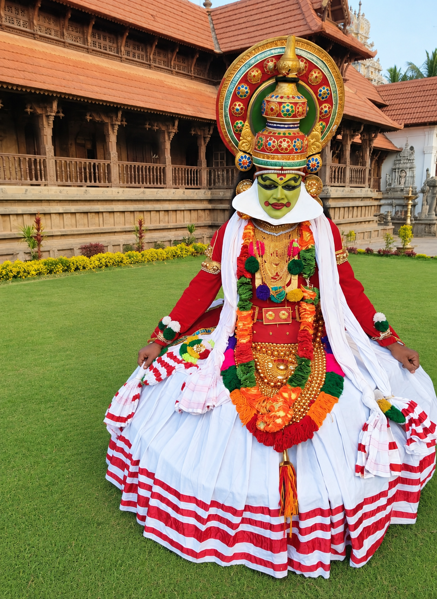

ABASS
Temple Service, Food & Education for all
A trusted platform connecting devotees with Ayyappa Seva, devotional activities, community initiatives, events and opportunities to contribute.


Sponsor an Upcoming Event
Pick one of the upcoming events below and share your donor details with the Trustees.
Formed on 25th March, 2024
ABASS — Abhath Bhanthavan Ayyappa Seva Sangham was formed on 25th March, 2024, inspired by ABASS — Akhila Bharatha Ayyappa Seva Sangham and its untiring service. Our members are also part of Akhila Bharatha Ayyappa Seva Sangham through the Pallavaram Branch.
Late Shri Sethumadhavan (Gurusamy), Late Shri V H Shankaran (Gurusamy, recipient of the lifetime achievement award from Akhila Bharatha Ayyappa Seva Sangham), Shri Vasantha Kumar (Gurusamy) and Shri Jayamohan (Gurusamy) were pivotal in forming this Trust. Yearly poojas such as Vilakku Pooja and Padi Pooja have been performed for over two decades in the Pallavaram area and continue under the Trust today. Our Gurusamys also perform pooja on request for groups of devotees, including non-trust members, in and around Chennai city.
Seva Highlights & Sacred Moments
Experience the spirit of devotion through our sacred Padi Pooja, Vilakku Pooja, Bhajans and community seva.

A legacy of faith, service and community
Rooted in Zamin Pallavaram, Chennai, the Trust continues an unbroken tradition of Ayyappa Seva, community Annadhaanam and support for devotees.
Decades of Seva
Yearly Vilakku Pooja and Padi Pooja carried on for over two decades in Pallavaram, now continued under the Trust formed on 25th March, 2024.
Registered Public Trust
Formally constituted as a registered public charitable trust with transparent governance and structured administration.
Annadhaanam & Seva
Regular Annadhaanam and seva for thousands of devotees during Mandalam, Makaravilakku and special pooja occasions.
Spiritual & Cultural
Preserving traditional worship practices, Vilakku Pooja, Padi Pooja, devotional music and spiritual heritage.
A glimpse of seva in action
Illustrative images of the kind of community welfare and devotional service the Trust supports.



Six major purposes, listed from the Trust Deed
The Trust operates exclusively for public charitable and religious purposes, advancing spiritual, social and community welfare.
Religious, Temple & Cultural Activities
Running the Trust’s religious and temple activities, promoting religious ethics and moral values, and advancing Indian religious culture, literature, arts and sports.
Education, Training & Scholarships
Educational institutions and schools for all, scholarships, fees and books for deserving students, and training for teachers, workers and graduates.
Deed clauses (b) (f) (u) (v) (x/z) (y) (aa) (ac) (ad) (ae) (as) →
Social Welfare, Relief & Employment
Relief for the poor and destitute irrespective of caste, creed or religion, homes for the aged, orphans and women, disaster relief, and employment generation.
Outreach, Publications & Partnerships
Public awareness and non-formal education, publishing and libraries, seminars and conferences, and partnerships with like-minded agencies.
Institutions, Centres & Property
Setting up and managing centres, hostels, Gurukulams and institutions, and acquiring, building and managing the property they need.
Deed clauses (g) (l) (t) (w) (ag) (ah) (ai) (aj) (ap) (aq) →
Funds, Governance & Administration
Non-communal, secular functioning; receiving grants, donations and fees; banking and borrowing; fundraising events; and employing staff.
Upcoming and recurring spiritual events
Join the ABASS community in sacred observances, annual festivals, Padi Pooja, and monthly Annadhaanam.
18 Padi Pooja
Sacred 18-steps pooja with Guruswamys, deepam lighting and devotional bhajans every month.
Enquire / Sponsor
Annadhaanam
Mass free feeding (Mahadhanam) for devotees, the needy and the local community — a sacred act of Seva.
Sponsor Annadhaanam
Maha Abhishekam
Holy abhishekam with milk, sandal paste, honey and theertham on auspicious days and festival occasions.
Enquire / Sponsor
Mandala Pooja
The 41-day mandala season culminating in grand Mandala Pooja — ABASS's most celebrated spiritual event of the year.
Enquire / SponsorFull event dates, venues and registration details will be published here by Trust administrators. Contact us on WhatsApp for the latest schedule.
WhatsApp for ScheduleSlokas, Bhajans & Ritual Guides
Curated devotional resources for devotees and pilgrims, including 108 Sarana Gosham, Harivarasanam and pooja procedures.
Access sacred chants, slokas and pooja steps
Explore texts, meanings and audio references for Lord Ayyappa worship, Vilakku Pooja procedures and Sabarimala pilgrimage preparations.
Open Devotional LibraryGive to the Trust's Causes
Every contribution is recorded with a receipt, a donation reference and full reconciliation support.

Trustees & Governance
ABASS is governed by a dedicated Board of Trustees committed to ethical administration, statutory compliance and faithful execution of the Trust Deed.
Annual Reports
Published after Board approval each yearCompliance Updates
Statutory filings and registration statusRegistered Office
Zamin Pallavaram, Chennai – 600 043Stay close to ABASS
Reach the Trust office or send an instant enquiry through WhatsApp for poojas, events and Annadhaanam.